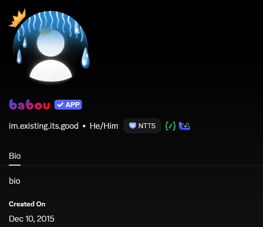

✦
Is ProfileSpoofer the best?
A local-only Vencord profile customizer. No real Discord items, permissions or server-side changes.
Community vote
Pick your answer, then leave the matching reaction on the GitHub poll.
Votes are counted through GitHub reactions, so one GitHub account = one real community vote.